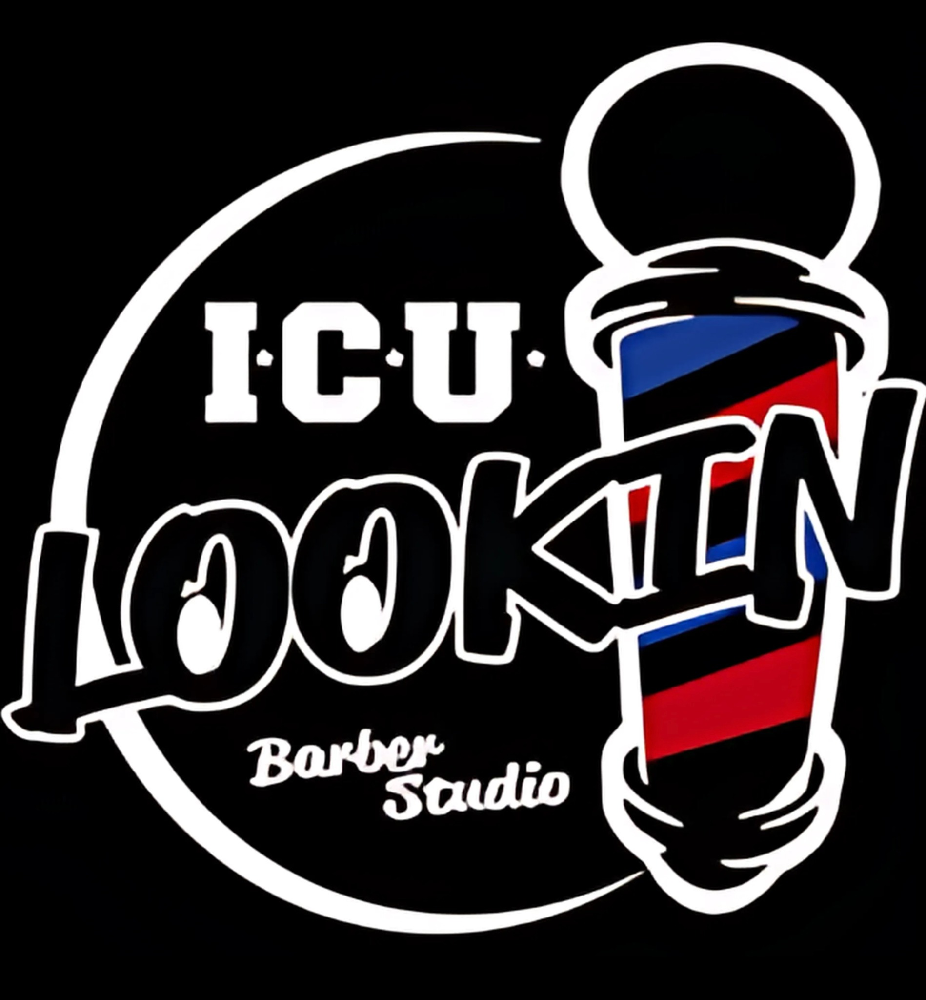

Password Recovery
ICU Barber Studio
Reset your password
Verifying your secure recovery link…
This password-recovery link is invalid, expired, or has already been used.
Return to ICU Barber Studio
ICU Barber Studio
Verifying your secure recovery link…
This password-recovery link is invalid, expired, or has already been used.
Return to ICU Barber Studio